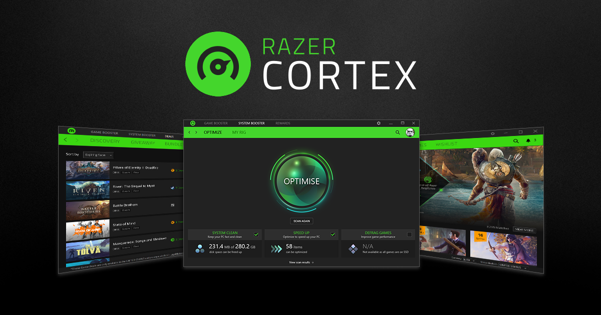
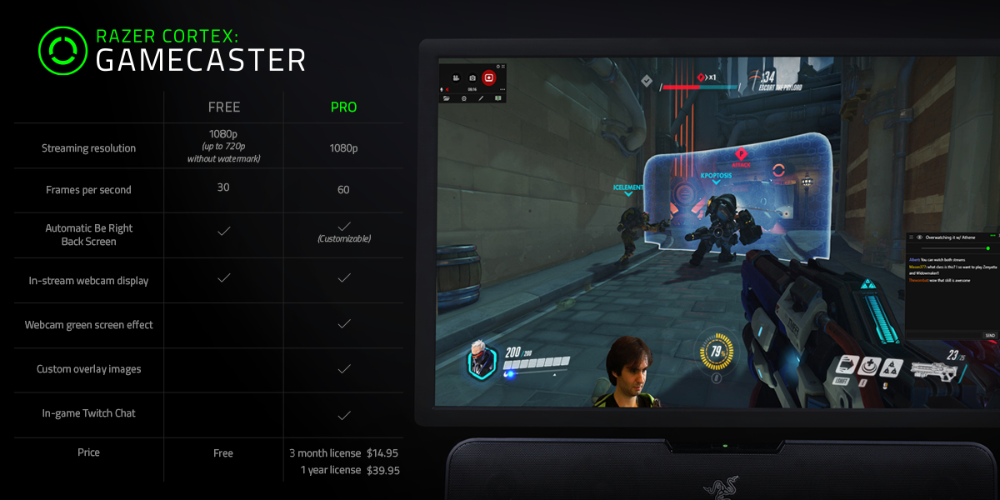

Game Booster Nedir?
Bu Razer Cortex özelliği, oyun oynarken gerekli olmayan uygulamaları (yani iş uygulamaları, arka plan yardımcıları) yönetir ve durdurur, daha sorunsuz bir deneyim için değerli kaynakları ve RAM'i boşaltır.
Hemen İndirBu Razer Cortex özelliği, oyun oynarken gerekli olmayan uygulamaları (yani iş uygulamaları, arka plan yardımcıları) yönetir ve durdurur, daha sorunsuz bir deneyim için değerli kaynakları ve RAM'i boşaltır.
Hemen İndirRazer Cortex: GAME BOOSTER, iki çekirdek modu kullanarak Windows işletim sisteminizi ve temel olmayan uygulamalarınızı mikro yöneterek FPS'nizi artırır: biri CPU uyku modunu devre dışı bırakır, diğeri ise CPU çekirdeğinin oyuna öncelik vermesini sağlar. Takip etmenize yardımcı olacak ayrı bir oyun içi FPS sayacıyla, bu ayarları daha da test edebilir ve ayarlayabilirsiniz.
Razer Cortex: GAME BOOSTER, bir oyun platformundan veya masaüstünüzden bir oyun başlattığınız anda otomatik olarak başlar. Programın kendi sunmuş olduğu en iyi performans verebilecek ayarları yapar. Ayrıca isteğe bağlı ayarları özelleştirebilirsin.z Oyun oynamayı bitirdiğinizde, bilgisayarınızı otomatik olarak önceki durumuna geri yükler.
"Hiç oyun için yapılmamış bir bilgisayarda bile oyunlarımı mükemmel şekilde çalıştırmama izin veriyor."
Ton, Parlaklık, Kontrast ve Dijital Titreşim gibi bir dizi ayar ile oyunun rengine ve parlaklığına ince ayar yaparak görsellerinizin tam olarak istediğiniz gibi görünmesini sağlayın.
